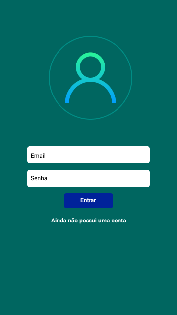

Hardware
Computadores e equipamentos
Suporte para computadores, periféricos e outros equipamentos de tecnologia.
Solicitar suporteSuporte e atendimento de tecnologia
CENTRAL DE ATENDIMENTO
Encontre suporte para equipamentos, redes, sistemas e acessos. Abra um chamado e nossa equipe irá ajudá-lo.
Solicitar suporteConfira os principais serviços oferecidos pela Central de Serviços.
Suporte para computadores, periféricos e outros equipamentos de tecnologia.
Solicitar suporteAtendimento para problemas de internet, conexão e acesso à rede.
Solicitar suporteAuxílio com sistemas, programas, aplicativos e erros de software.
Solicitar suporte
Suporte para contas de usuário, senhas e permissões de acesso.
Solicitar suporte